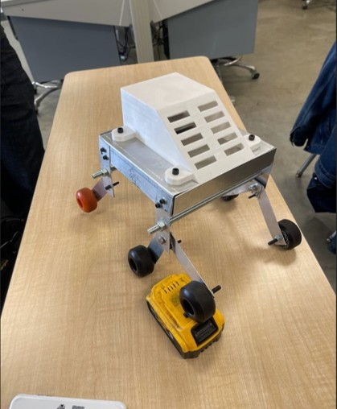
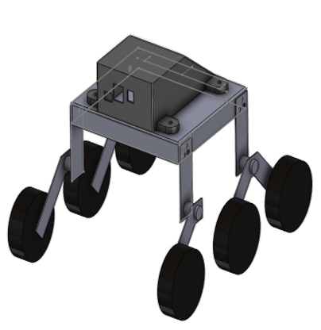
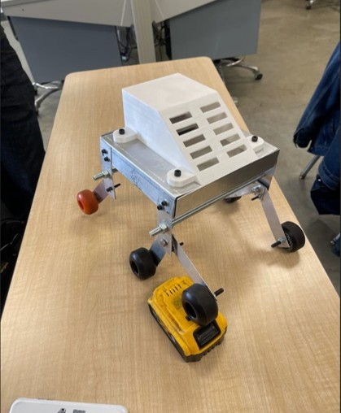
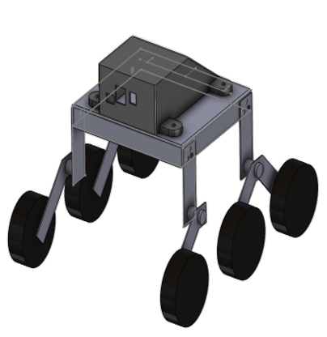

We built a Mars Rover!
Ok, well, not really...
This project was part of the class "Intro to Engineering Projects" taught in first year ESE at Conestoga College. The prompt for this was to design some sort of device that solved a world problem based on the UN SDG's. The main purpose was to practice designing a PCB using Altium along with designing and fabricating some sort of sheet metal/3D printed enclsure using Solidworks. Our group set out to build some kind of environmental monitoring unit. and went through a few interations before settling on the rover design. A key point to note in this project is that the end goal was not to have a functional device but just to design a PCB, integrate some sensors and put it in an enclosure (hence why it did not actually go to Mars).
Some key takeaways:
- Our PCB was not spectacular and we actually had to reprint it as we (I) learned that the default pad size in Altium is not useful for anything...
- We also did not realise that if we had a multi layer PCB, the transition points needed to have a wire pushed through and soldered at both sides to create continuity... Given the impossiby sized holes, we were unsucessful in doing this.
- If we were to do this again, we would have 3D printed much more of it as sheet metal works sucks and in the end it wasn't very stable due to the metal being, well, sheet like.
In the end this was a great learning experience and gave us all some introductory experience to the engineering R&D proccess. It also allowed us to each find our speciality's, aka, the thing we liked doing more (spoiler, mine is not Solidworks...).
If you would like to know more about this project, feel free to contact me.
DISCALIMER: This project was designed, created & directed during my time at Conestoga College